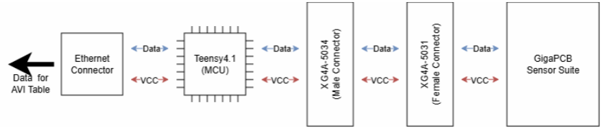

Context:
The GigaPCB interfaces with any RED rocket engine via stepper motor controllers, pressor transducers, and thermocouples. The Teensy Daughtercard is an attachment to the GigaPCB that provides Ethernet connectivity and computational capability. Separating these functions into a removable daughtercard allows controller designs to be modified, tested, and replaced without impacting the significantly more expensive sensor suite. Below is a conceptual block diagram of full avionic system.

Procedure:
Given GigaPCB pinouts, I was tasked with creating this complimentary daughtercard. I started off by finding a male complimentary that could mate with the GigaPCB, with the XG4A-5034 being suffice. I then bashed my head into a meat grinder visualizing how the daughtercard would connect to the GigaPCB. With a vague idea in mind, I referred to Teensy4.1 pinouts and mapped ~55 traces to the XG4A-5034. I also added an Ethernet connector, LED, and exposed several test points to finish the design.
What was Learned:
This was the first PCB where I focused heavily on tuning lengths of critical traces. I also became accustomed to 4-layer board design; using the layer order found below:
- Signals Plane
- GND Plane
- Power Plane
- Signal Plane